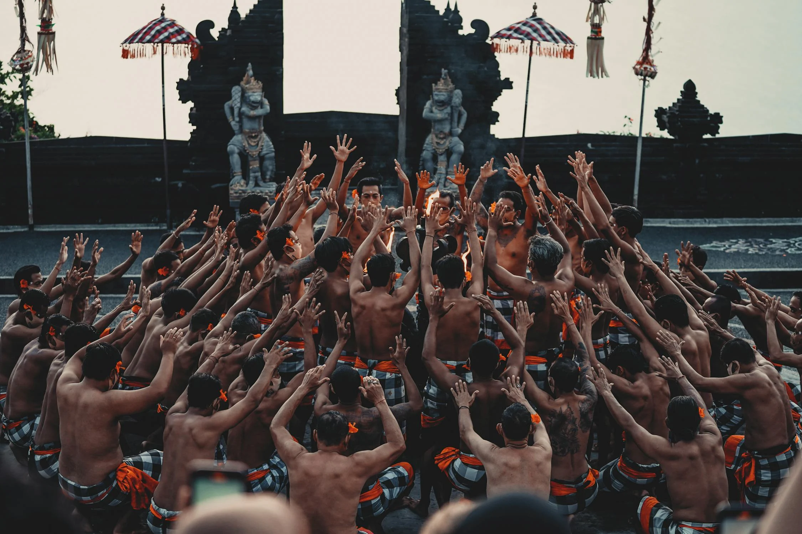
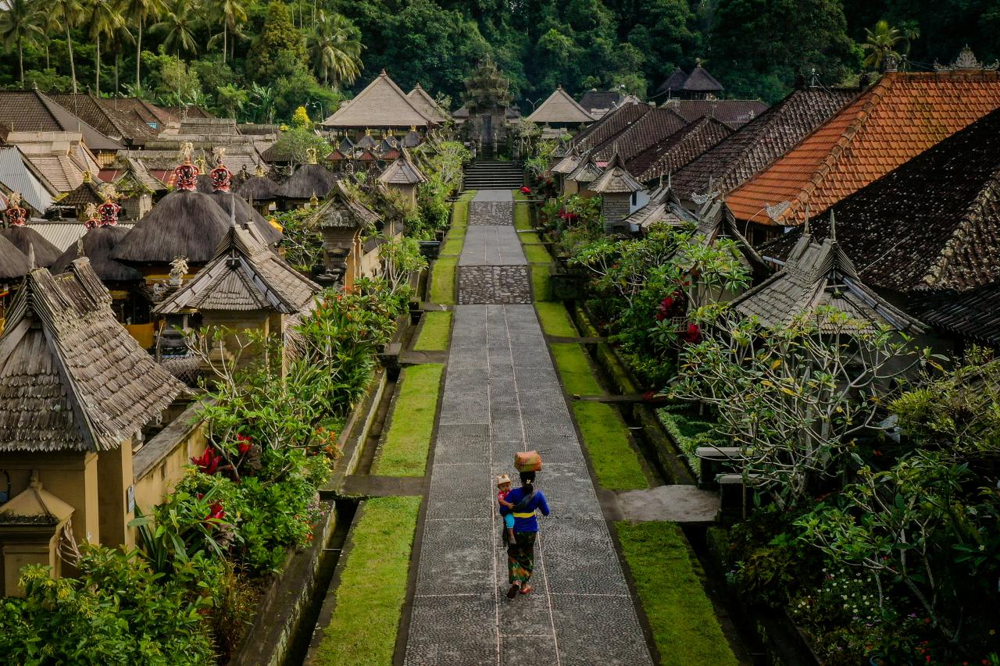

Bali Yang Merupakan Salah Satu Destinasi Wisata Di Indonesi Yang Begitu Banyak Memiliki Keindahan serta Keberagaman, Mulai Dari Keindahan Pantai, Berbagai Macam Pura, Makanan Khas. Sehingga Membuat Bali Sangat Dikenal Hingga Ke Mancanegara.
Bali, pulau dewata yang terletak di Indonesia, dikenal sebagai salah satu destinasi wisata pantai terbaik di dunia. Keindahan pantai-pantai Bali telah menarik perhatian wisatawan dari berbagai penjuru dunia. Pantai-pantai eksotis seperti Kuta, Nusa Dua, dan Uluwatu menawarkan panorama menakjubkan dengan pasir putih yang lembut, air laut yang jernih, dan ombak yang cocok untuk berselancar. Selain itu, pemandangan matahari terbenam di pantai-pantai dan pesona alam berhasil lainnya dapat memikat pengunjung sehingga telah diakui di mancanegara.
Bali tidak hanya memikat dengan keindahan alamnya, tetapi juga dengan keanekaragaman kulinernya yang kaya akan cita rasa. Dari masakan tradisional seperti babi guling, ayam betutu, hingga lawar, setiap hidangan memiliki cerita dan tradisi yang unik. Kuliner di Bali dipengaruhi oleh budaya lokal, upacara adat, dan bahan-bahan segar yang ditemukan di pulau ini. Selain itu, Bali juga menawarkan berbagai macam makanan internasional yang dapat ditemukan di restoran-restoran kelas dunia yang ada di pulau ini.


Bali, yang dikenal sebagai Pulau Seribu Pura, memiliki banyak pura yang tersebar di seluruh penjuru pulau. Setiap pura memiliki keunikan tersendiri, baik dari segi arsitektur, sejarah, maupun fungsinya dalam kehidupan spiritual masyarakat Bali. Pura Besakih, Pura Uluwatu, Pura Tanah Lot adalah beberapa contoh pura terkenal. Keberagaman pura ini mencerminkan kuatnya ikatan masyarakat Bali dengan agama Hindu, serta peran penting pura sebagai pusat peribadatan dan budaya.